آموزش ساخت اتصال VPN در Windows
ساخت اتصال جدید
- وارد Network and Sharing Center بشوید:
- بر روی دکمهی start کلیک راست و گزینه Control Panel را انتخاب کنید؛ یا بعد از باز کردن منوی start، عبارت Control Panel را بنویسید تا سیستم به دنبال آن بگردد. در پنجرهی بازشده بر روی Network and Sharing Center کلیک نمایید؛ یا بعد از انتخاب Network and Internet وارد Network and Sharing Center بشوید.
- بر روی علامت شبکه در قسمت پایین سمت راست مانیتور (Task Bar) کلیک و گزینهی Open network and sharing center را انتخاب نمایید.
- بر روی Set up a new connection or network کلیک نمایید.
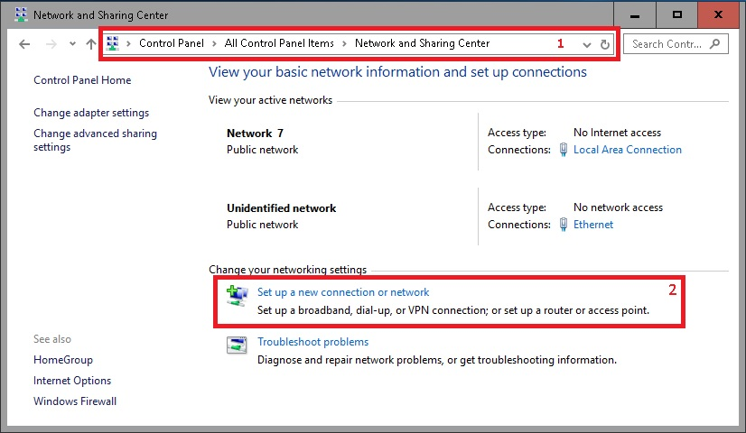
- در پنجرهی بازشده بر روی Connect to a workplace کلیک کنید.
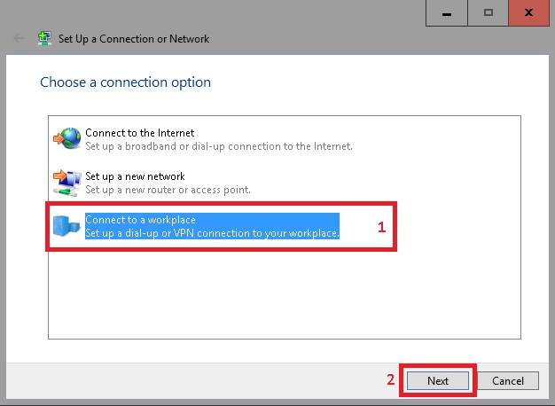
- در صفحهی بعد گزینهی No, create a new connection را انتخاب نمایید.
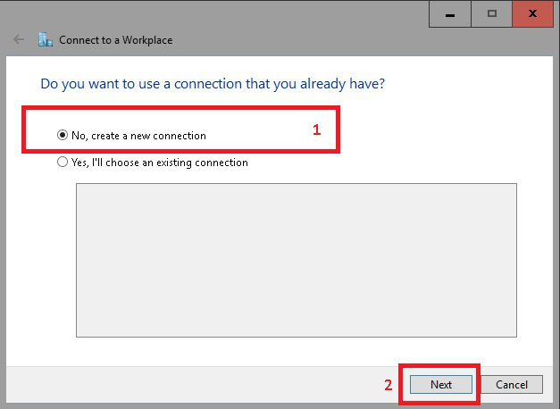
- در پنجرهی بعدی بر روی Use my Internet connection VPN کلیک کنید.
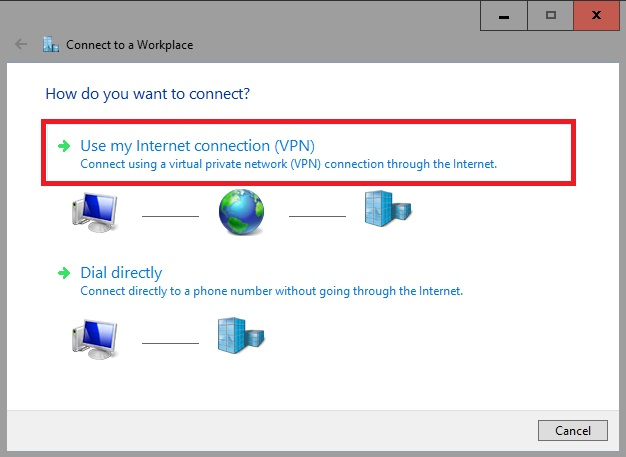
- در پنجرهی جدید گزینهی I'll set up an internet connection later را انتخاب نمایید.
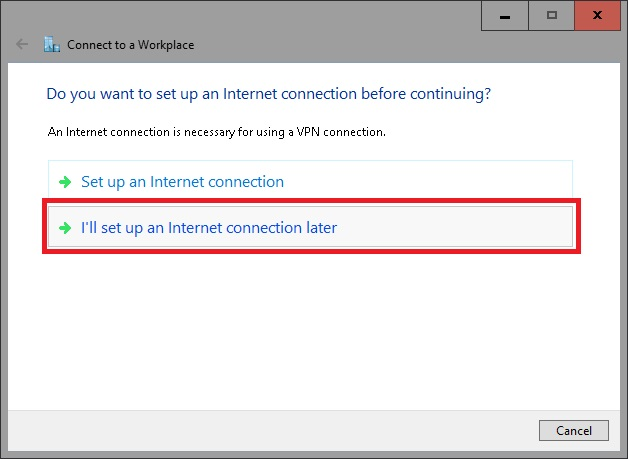
- در پنجرهی بازشده:
- در قسمت Internet address مقدار 172.16.0.1 یا vpn.sku.ac.ir را وارد کنید.
- در قسمت Destination name یک نام دلخواه مانند SKU برای اتصال VPN انتخاب نمایید.
در پایان بر روی دکمه Create کلیک کنید.
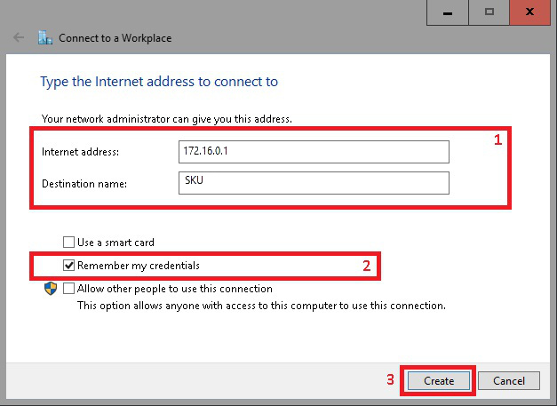
- مجدداً به پنجرهی Network and Sharing Center مراجعه و از سمت راست بالا گزینهی Change adapter settings را انتخاب کنید. بر روی اتصال VPN کلیک راست و گزینه Properties را انتخاب نمایید.
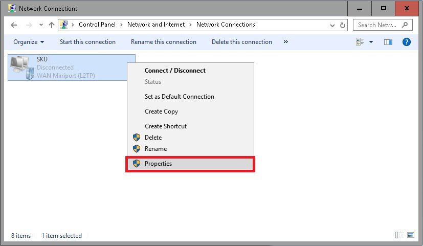
- در پنجرهی بازشده بخش Security را مطابق تصویر برای یکی از دو استاندارد ارتباطی PPTP یا L2TP/IPSec تنظیم کنید.
استفاده از استاندارد L2TP/IPSec به علت امنیت بالاتر پیشنهاد میشود.
-
L2TP/IPSec
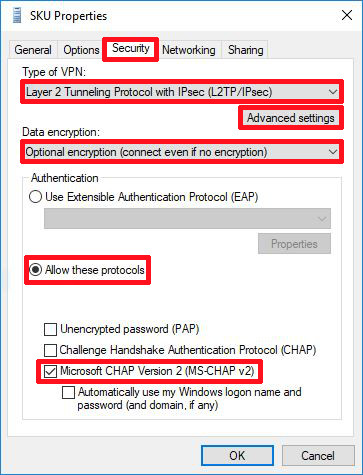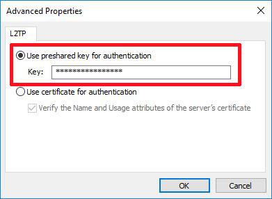
- Type of VPN را به عنوان L2TP/IPsec تنظیم کنید.
- Data encryption را برابر Optional encryption بگذارید.
- در بخش Authentication حالت Allow these protocols را انتخاب کنید.
- از فعال بودن MS-CHAP2 اطمینان حاصل کنید.
- بر روی Advanced settings کلیک کنید.
- در پنجرهی جدید، گزینهی Use preshared key for authentication را انتخاب کنید.
- در بخش Key، مقدار 123654 را وارد کنید.
-
PPTP
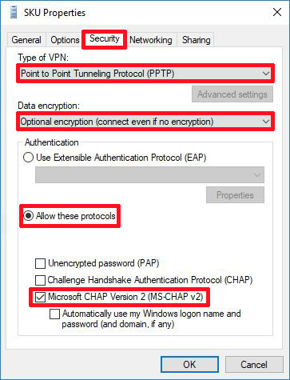
- Type of VPN را به عنوان PPTP تنظیم کنید.
- Data encryption را برابر Optional encryption بگذارید.
- در بخش Authentication حالت Allow these protocols را انتخاب کنید.
- از فعال بودن MS-CHAP2 اطمینان حاصل کنید.
- بر روی اتصال VPN کلیک راست و گزینهی Connect را انتخاب کنید؛ یا بر روی اتصال VPN دو بار کلیک کنید. نام کاربری (Username) و رمز عبور (Password) خود را وارد و در پایان بر روی دکمه Connect کلیک نمایید.
در صورت موفقیتآمیز بودن اتصال، عبارت Connected در زیر نام اتصال VPN ظاهر میشود. 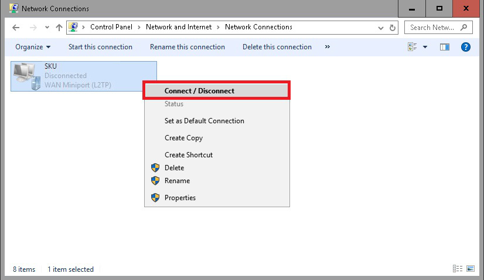 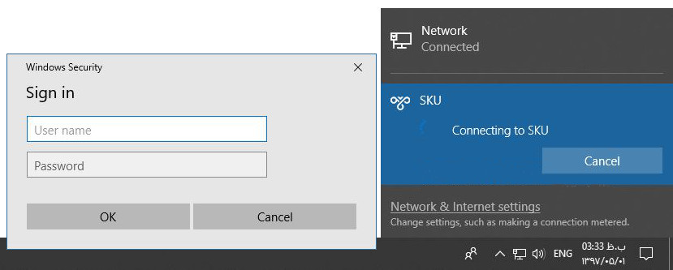